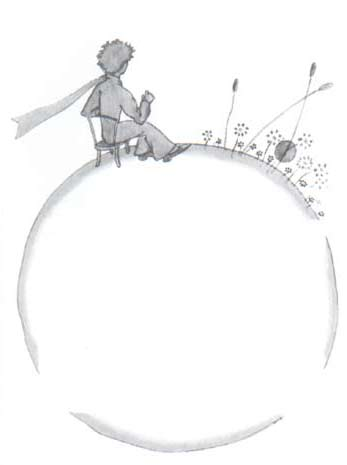
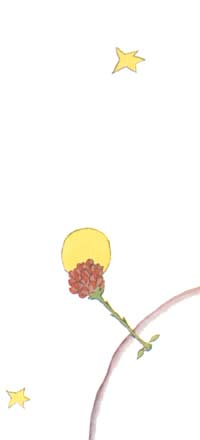
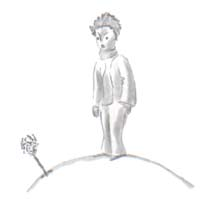
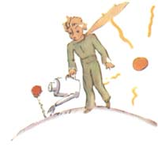
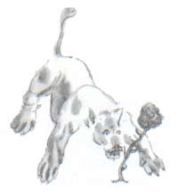
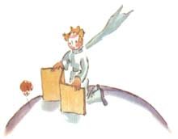
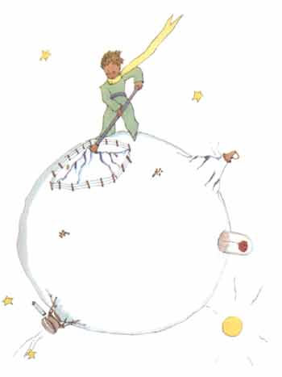
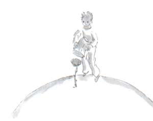

小王子目录
首页、1--3 章4--6 章
> 7--9 章
10-12章
13-15章
16-20章
21-23章
24-25章
26-27章
小王子作者
小王子解读与分析
小王子下载（PDF版）
小王子作者专题
小王子读后感集锦
《小王子》
[法] 圣埃克苏佩里
第五天，还是羊的事，把小王子的生活秘密向我揭开了。好象默默地思索了 很长时间以后，得出了什么结果一样，他突然没头没脑地问我：
“羊，要是吃小灌木，它也要吃花罗？”
“它碰到什么吃什么。” “连有刺的花也吃吗？”
“有刺的也吃！”
“那么刺有什么用呢？”
我不知道该怎么回答。那会儿我正忙着要从发动机上卸下一颗拧得太紧的螺 丝。我发现机器故障似乎很严重，饮水也快完了，担心可能发生最坏的情况，心 里很着急。
“那么刺有什么用呢？”
小王子一旦提出了问题，从来不会放过。这个该死的螺丝使我很恼火，我于 是就随便回答了他一句：
“刺么，什么用都没有，这纯粹是花的恶劣表现。”
“噢！”
可是他沉默了一会儿之后，怀着不满的心情冲我说：
“我不信！花是弱小的、淳朴的，它们总是设法保护自己，以为有了刺就可 以显出自己的厉害……”
我默不作声。我当时想的，如果这个螺丝再和我作对，我就一锤子敲掉它。 小王子又来打搅我的思绪了：
“你却认为花……”
“算了吧，算了吧！我什么也不认为！我是随便回答你的。我可有正经事要 做。” 他惊讶地看着我。
“正经事？”
他瞅着我手拿锤子，手指沾满了油污，伏在一个在他看来丑不可言的机件上。
“你说话就和那些大人一样！”
这话使我有点难堪。可是他又尖刻无情地说道：
“你什么都分不清……你把什么都混在一起！”
他着实非常恼火。摇动着脑袋，金黄色的头发随风颤动着。
“我到过一个星球，上面住着一个红脸先生。他从来没闻过一朵花。他从来 没有看过一颗星星。他什么人也没有喜欢过。除了算帐以外，他什么也没有做过。 他整天同你一样老是说：‘我有正经事，我是个严肃的人’。这使他傲气十足。 他简直不象是个人，他是个蘑菇。”
“是个什么？”
“是个蘑菇！”
小王子当时气得脸色发白。

“几百万年以来花儿都在制造着刺，几百万年以来羊仍然在吃花。要搞清楚 为什么花儿费那么大劲给自己制造没有什么用的刺，这难道不是正经事？难道羊 和花之间的战争不重要？这难道不比那个大胖子红脸先生的帐目更重要？如果我 认识一朵人世间唯一的花，只有我的星球上有它，别的地方都不存在，而一只小 羊胡里胡涂就这样把它一下子毁掉了，这难道不重要？”
他的脸气得发红，然后又接着说道：
“如果有人爱上了在这亿万颗星星中独一无二的一株花，当他看着这些星星 的时候，这就足以使他感到幸福。他可以自言自语地说：‘我的那朵花就在其中 的一颗星星上……’，但是如果羊吃掉了这朵花，对他来说，好象所有的星星一下 子全都熄灭了一样！这难道也不重要吗？！”
他无法再说下去了，突然泣不成声。夜幕已经降临。我放下手中的工具。我 把锤子、螺钉、饥渴、死亡，全都抛在脑后。在一颗星球上，在一颗行星上，在 我的行星上，在地球上有一个小王子需要安慰！我把他抱在怀里。我摇着他，对 他说：“你爱的那朵花没有危险……我给你的小羊画一个罩子……我给你的花画一副 盔甲……我……”我也不太知道该说些什么。我觉得自己太笨拙。我不知道怎样才能 达到他的境界，怎样才能再进入他的境界……唉，泪水的世界是多么神秘啊！
很快我就进一步了解了这朵花儿。在小王子的星球上，过去一直都生长着一 些只有一层花瓣的很简单的花。这些花非常小，一点也不占地方，从来也不会去 打搅任何人。她们早晨在草丛中开放，晚上就凋谢了。不知从哪里来了一颗种子， 忽然一天这种子发了芽。小王子特别仔细地监视着这棵与众不同的小苗：这玩艺 说不定是一种新的猴面包树。但是，这小苗不久就不再长了，而且开始孕育着一 个花朵。看到在这棵苗上长出了一个很大很大的花蕾，小王子感觉到从这个花苞 中一定会出现一个奇迹。然而这朵花藏在它那绿茵茵的房间中用了很长的时间来 打扮自己。她精心选择着她将来的颜色，慢慢腾腾地妆饰着，一片片地搭配着她 的花瓣，她不愿象虞美人那样一出世就满脸皱纹。她要让自己带着光艳夺目的丽 姿来到世间。是的，她是非常爱俏的。她用好些好些日子天仙般地梳妆打扮。然 后，在一天的早晨，恰好在太阳升起的时候，她开放了。
她已经精细地做了那么长的准备工作，却打着哈欠说道：

“我刚刚睡醒，真对不起，瞧我的头发还是乱蓬蓬的……”
小王子这时再也控制不住自己的爱慕心情：
“你是多么美丽啊！”
花儿悠然自得地说：
“是吧，我是与太阳同时出生的……”
小王子看出了这花儿不太谦虚，可是她确实丽姿动人。

她随后又说道：“现在该是吃早点的时候了吧，请你也想着给我准备一点……”
小王子很有些不好意思，于是就拿着喷壶，打来了一壶清清的凉水，浇灌着 花儿。

于是，就这样，这朵花儿就以她那有点敏感多疑的虚荣心折磨着小王子。例 如，有一天，她向小王子讲起她身上长的四根刺：
“老虎，让它张着爪子来吧！”

小王子顶了她一句：“在我这个星球上没有老虎，而且，老虎是不会吃草的”。
花儿轻声说道：“我并不是草。”
“真对不起。”
“我并不怕什么老虎，可我讨厌穿堂风。你没有屏风？”
小王子思忖着：“讨厌穿堂风……这对一株植物来说，真不走运，这朵花儿真 不大好伺候……”
“晚上您得把我保护好。你这地方太冷。在这里住得不好，我原来住的那个 地方……”
但她没有说下去。她来的时候是粒种子。她哪里见过什么别的世界。她叫人 发现她是在凑一个如此不太高明的谎话，她有点羞怒，咳嗽了两三声。她的这一
招是要小王子处于有过失的地位，她说道：
“屏风呢？”

“我这就去拿。可你刚才说的是……”
于是花儿放开嗓门咳嗽了几声，依然要使小王子后悔自己的过失。
尽管小王子本来诚心诚意地喜欢这朵花，可是，这一来，却使他马上对她产 生了怀疑。小王子对一些无关紧要的话看得太认真，结果使自己很苦恼。
有一天他告诉我说：“我不该听信她的话，绝不该听信那些花儿的话，看看花，闻闻它就得了。我的那朵花使我的星球芳香四溢，可我不会享受它。关于老 虎爪子的事，本应该使我产生同情，却反而使我恼火……”
他还告诉我说：
“我那时什么也不懂！我应该根据她的行为，而不是根据她的话来判断她。她使我的生活芬芳多彩，我真不该离开她跑出来。我本应该猜出在她那令人爱怜 的花招后面所隐藏的温情。花是多么自相矛盾！我当时太年青，还不懂得爱她。”
我想小王子大概是利用一群候鸟迁徙的机会跑出来的。在他出发的那天早上， 他把他的星球收拾得整整齐齐，把它上头的活火山打扫得干干净净。――他有两 个活火山，早上热早点很方便。他还有一座死火山，他也把它打扫干净。他想， 说不定它还会活动呢！打扫干净了，它们就可以慢慢地有规律地燃烧，而不会突 然爆发。火山爆发就象烟囱里的火焰一样。当然，在我们地球上我们人太小，不 能打扫火山，所以火山给我们带来很多很多麻烦。

小王子还把剩下的最后几颗猴面包树苗全拔了。他有点忧伤。他以为他再也 不会回来了。这天，这些家常活使他感到特别亲切。当他最后一次浇花时，准备 把她好好珍藏起来。他发觉自己要哭出来。
“再见了。”他对花儿说道。
可是花儿没有回答他。
“再见了。”他又说了一遍。
花儿咳嗽了一阵。但并不是由于感冒。
她终于对他说道：“我方才真蠢。请你原谅我。希望你能幸福。” 花儿对他毫不抱怨，他感到很惊讶。他举着罩子，不知所措地伫立在那里。 他不明白她为什么会这样温柔恬静。
 “的确，我爱你。”花儿对他说道：“但由于我的过错，你一点也没有理会。 这丝毫不重要。不过，你也和我一样的蠢。希望你今后能幸福。把罩子放在一边 吧，我用不着它了。”
“要是风来了怎么办？”
“我的感冒并不那么重……夜晚的凉风对我倒有好处。我是一朵花。”
“要是有虫子野兽呢？……”
“我要是想认识蝴蝶，经不起两三只尺蠖是不行的。据说这是很美的。不然 还有谁来看我呢？你就要到远处去了。至于说大动物，我并不怕，我有爪子。”
于是，她天真地显露出她那四根刺，随后又说道：
“别这么磨蹭了。真烦人！你既然决定离开这儿，那么，快走吧！”
她是怕小王子看见她在哭。她是一朵非常骄傲的花……
1-3章4-6章7-9章10-12章13-15章16-20章21-23章24-25章26-27章